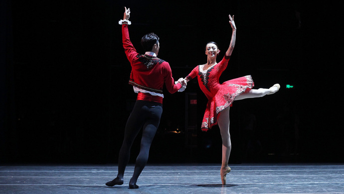
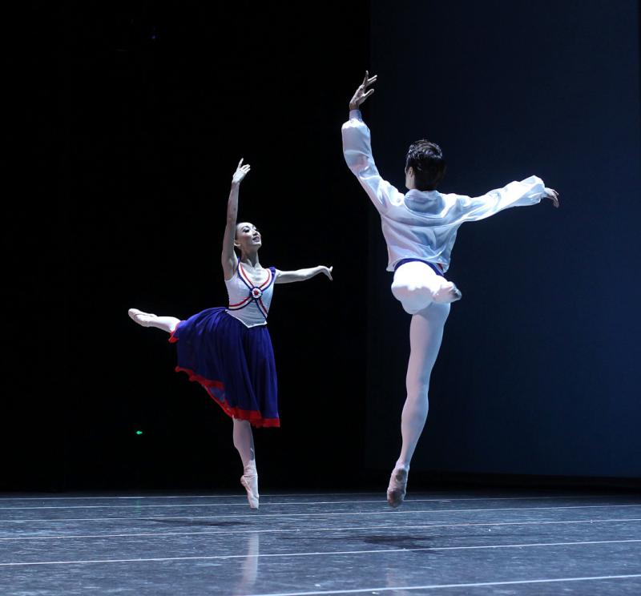

8月，两大国际赛事无缝对接，齐力打响“上海文化”品牌
2018-08-12 来源：上观新闻
8月，两大国际赛事无缝对接，齐力打响“上海文化”品牌

8月的上海，来自世界各地的艺术大师和年轻的追梦者们聚集于此。第六届上海国际芭蕾舞比赛8月11日晚刚刚落下帷幕，第二届艾萨克斯特恩国际小提琴比赛在同一天正式开启。申城迎来送往，精彩不间断。
创立于1995年的上海国际芭蕾舞比赛，是中国最早的国际芭蕾舞赛事。虽经历中途停赛，但2016年重振旗鼓以来，对标国际一流，连续两届，影响力不断攀升，目标通过连续三届国际性、专业性、大众性的赛事能级提升，力争成为亚洲一流、世界领先的芭蕾舞比赛。创办仅两年的上海艾萨克·斯特恩国际小提琴比赛崛起势头迅猛，拥有百年历史的美国古典音乐杂志Musical America Worldwide已将其列入“2018全球顶尖音乐赛事指南”。未来，它的目标是树立国际音乐赛事的上海标准，提升中国音乐的世界话语权。
